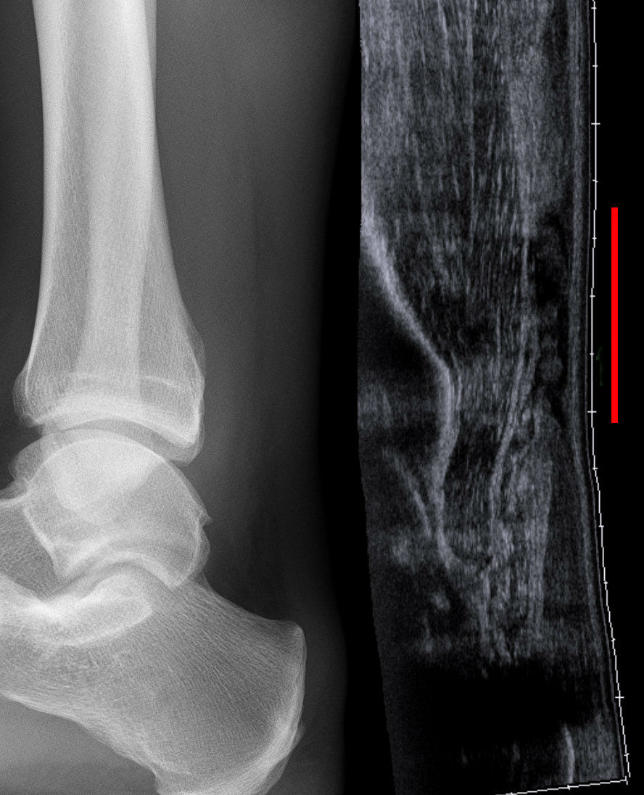

Ficha del catálogo
Tendinopatía y rotura del tendón de Aquiles
- Sistema
- Óseo
- Modalidad
- US
- Región
- Tobillo
- Dificultad
- Básico
El tendón de Aquiles es el más grueso del cuerpo y sufre sobrecarga en corredores y en deportistas ocasionales de mediana edad. La tendinopatía crónica precede con frecuencia a la rotura completa, que se produce típicamente en la zona con menor vascularización, unos centímetros por encima de su inserción calcánea.
Técnica
Ultrasonido con sonda lineal de alta frecuencia en planos longitudinal y transversal, incluyendo maniobras dinámicas de flexión y extensión del tobillo.
Qué observar
- Engrosamiento fusiforme del tendón con pérdida del patrón fibrilar
- Áreas hipoecoicas intratendinosas y neovascularización en Doppler
- Solución de continuidad completa con retracción de los cabos en la rotura
- Hueco palpable coincidente con la zona de discontinuidad ecográfica
- Distancia entre los extremos en flexión plantar, dato útil para el tratamiento
- Bursitis retrocalcánea y entesofito en las formas insercionales
Hallazgos
Tendón engrosado con ecoestructura heterogénea o interrupción completa de las fibras con separación de los extremos.
Perlas
La zona crítica se sitúa a unos dos a seis centímetros de la inserción calcánea porque allí la vascularización es más pobre. La exploración dinámica ecográfica distingue una rotura completa de una parcial mejor que cualquier imagen estática.
Diagnóstico diferencial
- Rotura del músculo plantar delgado
- Colección entre sóleo y gemelo con Aquiles íntegro.
- Bursitis retrocalcánea aislada
- Colección anterior al tendón sin alteración fibrilar.
- Trombosis venosa profunda
- Vena no compresible con dolor en pantorrilla.
Simuladores
- Anisotropía por inclinación de la sonda
- Xantoma tendinoso
- Cicatriz de rotura antigua
Por modalidad
- US
- Estudio dinámico de elección, rápido y comparativo
- RM
- Mejor valoración de roturas parciales y del estado del tejido
- RX
- Detecta calcificaciones y entesofitos insercionales
Protocolo
Barrido longitudinal y transversal completo del tendón con sonda de alta frecuencia, comparación con el lado sano y maniobras dinámicas.
Clasificación
Errores frecuentes
- Confundir la anisotropía con una lesión hipoecoica real
- No realizar exploración dinámica y sobrestimar la integridad del tendón
- Olvidar medir la separación de los cabos, dato relevante para el tratamiento

aquiles tendinopatia rotura tendinosa ecografia anisotropia deportiva tobillo